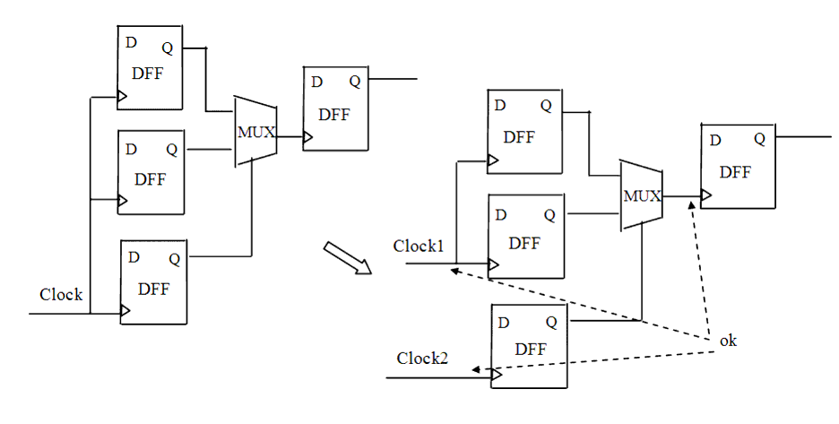

Description
This rule detects metastable flip-flops in the design. A metastable flip-flop is one that is triggered by a clock derived from a multiplexer whose input and select pins are driven by data from the same clock domain through some combinational logic. Such a flip-flop may be falsely triggered because the clock origin is not stable.This rule does not fire on a metastable flip-flop triggered by a clock derived from a multiplexer whose input and select pins are all driven by data from the same clock domain through combinational logic.
Policy
DESIGN
Ruleset
CLOCKS
Language
VHDL/Verilog
Type
Hardware
Severity
Error
Here are examples of valid and invalid Verilog code, followed by circuit diagrams that illustrate the problem and the correct approach:
// Invalid example module ntl_clk34_top; input Clock1; ... wire D_01, D_02, Ctrl_01, D_03, net_01; reg D_11, D_12, net_02; ... GTECH_FD1 U0(.D(D_01), .CP(Clock1), .Q(D_11)); GTECH_FD1 U1(.D(D_02), .CP(Clock1), .Q(D_12)); GTECH_FD1 U2(.D(Ctrl_01), .CP(Clock1), .Q(Ctrl_11)); GTECH_MUX U3(.A(D_11), .B(D_12), .S(Ctrl_11), .Z(D_03); GTECH_FD1 U4(.D(net_01), .CP(D_03), .Q(net_02)); // NTL_CLK34 fires -- violation endmodule // Valid example module ntl_clk34_top; input Clock1, Clock2; ... wire D_01, D_02, Ctrl_01, D_03, net_01; reg D_11, D_12, net_02; ... GTECH_FD1 U0(.D(D_01), .CP(Clock1), .Q(D_11)); GTECH_FD1 U1(.D(D_02), .CP(Clock1), .Q(D_12)); GTECH_FD1 U2(.D(Ctrl_01), .CP(Clock2), .Q(Ctrl_11)); GTECH_MUX U3(.A(D_11), .B(D_12), .S(Ctrl_11), .Z(D_03); GTECH_FD1 U4(.D(net_01), .CP(D_03), .Q(net_02)); // OK endmodule